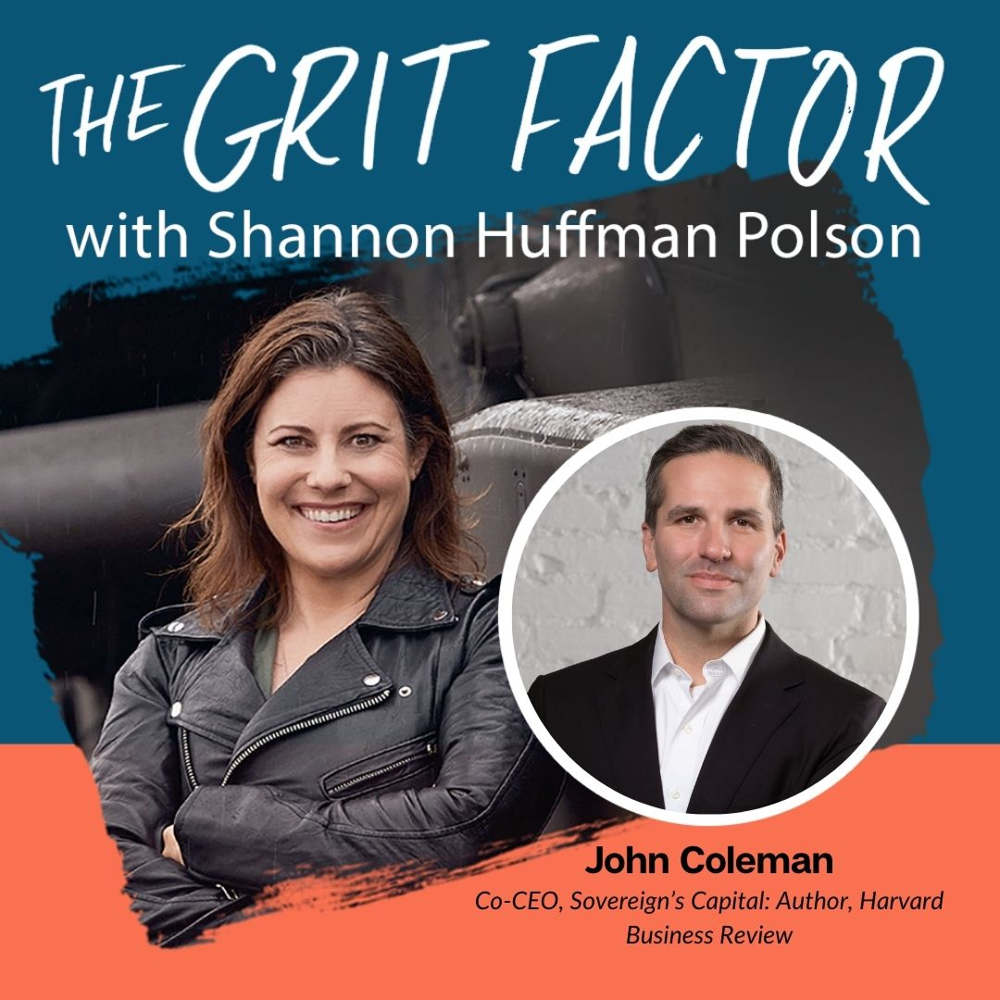

Book Shannon for your next show, interview her for your next article
The Grit Factor Podcast


Our Latest Episode
Season
3
Episode
17
How High Performers Think: Dr. Ruth Gotian on Success, Leadership & Motivation
Host
Shannon Huffman Polson is the founder of The Grit Institute and host of The Grit Factor Podcast, where she helps purpose-driven leaders build grit, resilience, and purpose in their lives and organizations.
A former U.S. Army Apache helicopter pilot and one of the first women to fly the Apache in the Army, Shannon brings real-world leadership experience from the military and corporate boardroom to her work as an author, speaker, and leadership educator. She is the author of The Grit Factor: Courage, Resilience, and Leadership in the Most Male-Dominated Organization in the World, which distills lessons from elite leaders across industries and the armed forces.
Through The Grit Institute, Shannon combines research, storytelling, and actionable frameworks to help individuals and organizations navigate transitions, overcome challenges, and lead with impact. Her work empowers people to connect with purpose and bring values-based leadership into every facet of life and work.
Whether in the cockpit, the classroom, or the boardroom, Shannon champions a mission to cultivate courage, purpose, and authentic leadership for a better world.
Guest Bio
Dr. Ruth Gotian, Chief Learning Officer and Associate Professor of Education in Anesthesiology at Weill Cornell Medicine, is a globally recognized expert in mentorship and leadership development.
Hailed by Nature, Wall Street Journal, and Columbia University, she was named a top 20 mentor worldwide. Thinkers50 ranked her as the #1 emerging management thinker in 2021, LinkedIn recognized her as a top voice in mentoring in 2023, and she was named a Top 50 Executive Coach in the world in 2024 (Coaches50 list).
A semi-finalist for Forbes 50 Over 50, Dr. Gotian is a prolific contributor to Harvard Business Review, Forbes, and Psychology Today, where she shares insights on 'optimizing success.'
With a focus on the mindset and skill set of peak performers, including Nobel Prize winners, astronauts, Olympic and NBA champions, she's also an award-winning author of The Success Factor and The Financial Times Guide to Mentoring.
Summary
In this conversation, Shannon Huffman Polson sits down with Dr. Ruth Gotian, a world-renowned expert in leadership, high performance, and success. Together, they explore what truly sets high achievers apart—from astronauts and Olympic athletes to top-performing leaders. Dr. Gotian shares insights from her groundbreaking research on motivation, resilience, and peak performance, revealing practical strategies anyone can apply to excel in their personal and professional life.
They also discuss the mindsets that drive exceptional achievement, the habits that separate elite performers from the rest, and how purpose, curiosity, and continuous learning fuel long-term success. Whether you're a leader, creator, or someone striving to improve, this conversation offers actionable wisdom to help you elevate your performance and live with intention.
Key Takeaways
-
What Dr. Ruth Gotian has learned from studying the world's highest performers
-
The mindsets and daily habits that drive exceptional success
-
How purpose fuels resilience and long-term motivation
-
The importance of curiosity and continuous learning
-
Practical tools you can start using today to elevate your performance
-
Why high achievers think differently—and how you can too
Resources
Website: https://ruthgotian.com/
LinkedIn: https://www.linkedin.com/in/rgotian
Resources
Books by John Coleman:
HBR Guide to Crafting Your Purpose - https://bookshop.org a/15754/9781633699830
Passion and Purpose - https://bookshop.org/a/15754/9781422142424
Miracles - https://bookshop.org/a/15754/9798987316610
Podcast Episodes
Season
3
Episode
16
Living Your Ikigai: Sam Ushio on Purpose, Presence, and the Power of Daily Alignment
Host
Shannon Huffman Polson is the founder of The Grit Institute and host of The Grit Factor Podcast, where she helps purpose-driven leaders build grit, resilience, and purpose in their lives and organizations.
A former U.S. Army Apache helicopter pilot and one of the first women to fly the Apache in the Army, Shannon brings real-world leadership experience from the military and corporate boardroom to her work as an author, speaker, and leadership educator. She is the author of The Grit Factor: Courage, Resilience, and Leadership in the Most Male-Dominated Organization in the World, which distills lessons from elite leaders across industries and the armed forces.
Through The Grit Institute, Shannon combines research, storytelling, and actionable frameworks to help individuals and organizations navigate transitions, overcome challenges, and lead with impact. Her work empowers people to connect with purpose and bring values-based leadership into every facet of life and work.
Whether...
Host
Shannon Huffman Polson is the founder of The Grit Institute and host of The Grit Factor Podcast, where she helps purpose-driven leaders build grit, resilience, and purpose in their lives and organizations.
A former U.S. Army Apache helicopter pilot and one of the first women to fly the Apache in the Army, Shannon brings real-world leadership experience from the military and corporate boardroom to her work as an author, speaker, and leadership educator. She is the author of The Grit Factor: Courage, Resilience, and Leadership in the Most Male-Dominated Organization in the World, which distills lessons from elite leaders across industries and the armed forces.
Through The Grit Institute, Shannon combines research, storytelling, and actionable frameworks to help individuals and organizations navigate transitions, overcome challenges, and lead with impact. Her work empowers people to connect with purpose and bring values-based leadership into every facet of life and work.
Whether in the cockpit, the classroom, or the boardroom, Shannon champions a mission to cultivate courage, purpose, and authentic leadership for a better world.
Guest Bio
Sam Ushio is the founder and Chief Ikigai Officer of Ikigai Lab, a social enterprise that blends ancient Japanese wisdom with modern science to help people and organizations align purpose with measurable impact. Drawing on two decades in corporate leadership and consulting, Sam's work focuses on human sustainability, values-based growth, and bringing humanity back into business.
A former financial services executive, Sam experienced a pivotal moment that transformed his understanding of success—from financial growth to personal and purposeful growth. His family's story, rooted in Japan over a century ago, deeply shaped his worldview and introduced him to the authentic essence of Ikigai—the Japanese concept of a "reason for being."
Through Ikigai Lab, Sam works with global brands and leaders to create cultures where people thrive through alignment of strengths, values, and daily actions. His frameworks integrate positive psychology, emotional intelligence, and ancient wisdom, inspiring people to live with awareness, gratitude, and intention every day.
Sam is also the creator of the Ikigai Summit (soon to be rebranded as Repurpose), an annual event that explores how purpose-driven leadership can reshape organizations and communities for a more meaningful future.
At his core, Sam believes purpose isn't a destination—it's a daily practice. His mission is to help others discover and live their Ikigai through the simple yet profound act of aligning who they are with how they live and lead.
Summary
In this conversation, Shannon Huffman Polson and Sam Ushio explore the concept of Ikigai, its origins, and its significance in personal and professional life. They discuss the importance of family legacy, personal growth, and the misunderstandings surrounding Ikigai, particularly the common four-circle Venn diagram. Sam shares his journey of discovering Ikigai through his family's history and emphasizes the need for gratitude, intentionality, and the integration of personal values in daily life. The discussion also touches on the impact of Ikigai on organizations and the importance of spirituality and rituals in Japanese culture.
Takeaways
-
Ikigai is a Japanese concept meaning 'reason for being'.
-
Personal stories shape our understanding of purpose.
-
Financial growth should not compromise personal growth.
-
Gratitude and awareness are essential for a fulfilling life.
-
Ikigai is about aligning daily actions with personal values.
-
The four-circle Venn diagram is a common misunderstanding of Ikigai.
-
Daily life (sekatsu) is central to understanding Ikigai.
-
Mindset and emotional intelligence are crucial for personal development.
-
Reflecting on influential people can help clarify one's values.
-
Ikigai can enhance both personal and professional fulfillment.
Chapters
00:00 – What Is Ikigai, Really?
Sam Ushio introduces the real meaning of Ikigai—not just an abstract idea of life's purpose, but the alignment of daily actions with personal values and priorities.
01:05 – Purpose as the Foundation of Grit and Resilience
Host Shannon Huffman Polson shares how purpose became central to her research on grit and leadership, setting the stage for the conversation.
02:57 – Sam Ushio's Journey from Corporate Success to Purpose Alignment
Sam reflects on his background in financial services, the "lightning bolt moment" that shifted his path, and his discovery of a deeper calling through Ikigai.
03:48 – The Power of Family Heritage and Migration
Sam shares his great-grandparents' story—leaving Japan to support a 1,200-year-old shrine—and how that legacy shaped his modern understanding of purpose and sacrifice.
08:19 – Realizing the Limits of Financial Growth
Sam explains how a career focused solely on financial metrics led to personal disconnection—and how redefining growth became the start of his transformation.
11:03 – The Value of Failure and Creative Experimentation
Sam describes his early entrepreneurial struggles and creative experiments that didn't work, emphasizing how failure built clarity and resilience.
13:30 – Discovering the Family Photo That Changed Everything
A 100-year-old family photo surfaces at just the right moment, sparking deep reflection and connecting Sam's modern journey to ancestral purpose.
14:52 – Rediscovering Ikigai Through Family Wisdom
Sam's Aunt Julie plays a key role in reconnecting him with the true Japanese essence of Ikigai—as a philosophy of balance, awareness, and daily living.
16:33 – Debunking the 4-Circle Ikigai Myth
Sam and Shannon unpack the viral "Venn diagram" of Ikigai, exploring how Western interpretations often miss its true meaning rooted in sekatsu—daily life.
20:12 – Ikigai as Daily Alignment, Not a Destination
Sam reframes Ikigai as the daily practice of aligning values with actions—living your reason for being moment by moment, not chasing a final goal.
24:21 – Frameworks for Living with Purpose
Exploring the fusion of Japanese wisdom and positive psychology, Sam discusses using values and strengths (via CliftonStrengths) to guide intentional living.
26:10 – From Purpose to Measurable Impact
Sam connects Ikigai to measurable outcomes in leadership and business, linking emotional awareness, cognition, and behavior to results.
32:10 – How to Begin Your Ikigai Journey
Sam offers a practical starting point: reflect on a person who has shaped you, explore the values behind their influence, and connect that to your own life purpose.
34:05 – Practicing Ikigai in Daily Life (Sekatsu)
Sam introduces the "Minimum Viable Purpose" concept—testing small daily actions outside your comfort zone to grow purposefully, not perfectly.
38:05 – Purpose in the Age of AI
A discussion on how AI is shaping human purpose and connection, and how grounding in values helps navigate rapid technological change.
40:15 – Inside Ikigai Lab: Bridging Humanity and Business
Sam explains how Ikigai Lab helps organizations and teams connect individual purpose to measurable impact through human sustainability frameworks.
43:04 – Building Awareness and Intention Across Generations
Sam discusses bringing the Ikigai philosophy to workplaces, universities, and communities to help people live and lead with intention.
49:23 – Returning to Japan: A Full-Circle Journey
Sam shares the emotional story of returning to his family's ancestral shrine in Japan, honoring generations of purpose, resilience, and continuity.
53:29 – The Sacred in the Everyday
Shannon reflects on her trip to Japan, the power of ritual, and what it means to recognize the sacred in daily life—connecting to the heart of Ikigai.
56:11 – Purpose as a Verb, Not a Goal
Sam and Shannon conclude that Ikigai isn't something you find once—it's something you live daily, through curiosity, courage, and continual growth.
Resources
Website: https://ikigailab.co/
LinkedIn: https://www.linkedin.com/in/samushio/
Season
3
Episode
15
The Power of Purpose: Phyllis Wilson's Impact on Military History
Host: Shannon Huffman Polson
Shannon Huffman Polson is a former Apache helicopter pilot, speaker, and author of "The Grit Factor: Courage, Resilience, and Leadership in the Most Male-Dominated Organization in the World." She is the founder of The Grit Institute, where she helps purpose-driven leaders build grit and resilience.
Guest: Phyllis Wilson
Phyllis Wilson is a retired U.S. Army Chief Warrant Officer 5 with a military career spanning nearly four decades, including deployments to Iraq as a senior intelligence analyst. She is the president of the Military Women's Memorial in Washington, DC, the only national memorial honoring the service of women in all branches and eras of the U.S. military.
Description
In this episode of The Grit Factor, Shannon Huffman Polson talks with Phyllis Wilson about her remarkable journey from a young recruit to a leader in the Military Women's Memorial. Phyllis shares her experiences in the military, the challenges she faced, and her mission to...
Host: Shannon Huffman Polson
Shannon Huffman Polson is a former Apache helicopter pilot, speaker, and author of "The Grit Factor: Courage, Resilience, and Leadership in the Most Male-Dominated Organization in the World." She is the founder of The Grit Institute, where she helps purpose-driven leaders build grit and resilience.
Guest: Phyllis Wilson
Phyllis Wilson is a retired U.S. Army Chief Warrant Officer 5 with a military career spanning nearly four decades, including deployments to Iraq as a senior intelligence analyst. She is the president of the Military Women's Memorial in Washington, DC, the only national memorial honoring the service of women in all branches and eras of the U.S. military.
Description
In this episode of The Grit Factor, Shannon Huffman Polson talks with Phyllis Wilson about her remarkable journey from a young recruit to a leader in the Military Women's Memorial. Phyllis shares her experiences in the military, the challenges she faced, and her mission to preserve the stories of America's servicewomen.
Summary
Phyllis Wilson discusses her military career, the importance of preserving the stories of servicewomen, and her leadership at the Military Women's Memorial. She reflects on the challenges of being a woman in the military, the impact of her work, and the lessons learned from her service.
Key Highlights
00:00 – Challenge Accepted
Phyllis opens by reflecting on moments when people underestimate her:
"Sit back and watch, buddy. I'll show you what I'm capable of doing."
She frames underestimation as fuel for proving herself rather than discouragement.
03:17 – Joining the Army for Opportunity
Phyllis describes joining the military to afford college — a "four-year plan" that turned into 37 years of service.
She was drawn in by education, travel, and a sense of purpose.
05:09 – Motherhood & Warrant Officer Training
Phyllis recounts attending the Warrant Officer Candidate Program while raising young children:
-
Describes grueling inspections and "hazing" culture of the time.
-
Brought her kids to training at Fort Huachuca, Arizona, with classmates helping out.
-
Reflects on resilience and community support.
09:07 – Climbing to Chief Warrant Officer 5
She breaks down the rarity of her rank:
-
Out of 1 million Army personnel, only ~822 are CW5s.
-
Highlights the tight Warrant Officer network and the importance of relying on collective expertise, not pretending to know everything.
10:22 – Imposter Syndrome
Phyllis candidly talks about moments of doubt at senior levels:
"You pinch yourself—am I really supposed to be here?"
She learned to trust the leaders who believed in her and to "just do the work."
13:25 – Iraq: Life-or-Death Intel Decisions
As a senior intelligence analyst in Special Operations, she was responsible for nightly mission targeting:
-
Describes pressure of ensuring missions aren't sent to "dry holes" or booby-trapped locations.
-
Talks about guilt when missions result in deaths, even if assessments were correct.
"Sometimes when they don't come home alive, you kick yourself… Can I keep doing this?"
-
Coping through treadmill running 70–80 miles a week to manage stress.
17:36 – Serving Alongside Her Sons
Phyllis' sons were deployed in Iraq simultaneously:
-
Promoted one to Sergeant during Thanksgiving.
-
Mixed pride and deep fear, especially near the end of their tours.
21:43 – Special Operations as a Woman
She thrived in Special Ops because the mission came first and gender was irrelevant:
"I never even noticed I was the only woman in the room… I count lefties, not women."
She stresses speaking with value, not just to be heard.
25:57 – Leadership & Trust Under Pressure
Trust looks different in combat vs. garrison. She highlights how earning trust through competence is essential when lives are on the line.
29:45 – Childhood Foundations
Growing up as a tomboy in a strict but loving household shaped her confidence and resilience.
She recalls lifeguarding as a teen and learning to develop "thick skin" early.
33:45 – Evolving Sense of Purpose
Over decades, her purpose deepened through service and exposure to other cultures.
She learned profound lessons on contentment and gratitude from communities abroad.
39:01 – Post-Military Transition
After hanging up the uniform, Phyllis felt unexpectedly lost.
She founded "Wounded Warriors Have Families Too" to support families of injured service members, restoring her sense of mission.
44:28 – Leading the Military Women's Memorial
As president, she discovered how many women's stories remain untold.
-
The Memorial's database has 325,000+ stories but represents only ~10% of all who served.
-
She's passionate about preserving and amplifying these histories.
51:52 – Defending Women's Stories Today
In an era where some narratives are being erased, Phyllis emphasizes protecting and elevating military women's stories — including those who died recently.
"Our job is to honor and tell the stories… not drag their names through the mud."
58:01 – Lifelong Mission
Phyllis' driving force today:
"How could I not have known these stories?"
She's committed to making sure America knows the names and deeds of the women who served.
1:01:20 – Closing
Shannon thanks Phyllis for her leadership and storytelling. Phyllis' journey is framed as a call to preserve legacy, build resilience, and lead with purpose.
Resources & Contact Details
The Grit Institute: thegritinstitute.com
Military Women's Memorial: womensmemorial.org
Book: The Grit Factor
Download The Grit Factor Manifesto
Contact Phyllis Wilson:
info@womensmemorial.org

Season
3
Episode
14
The Purpose Equation: John Coleman's Blueprint for a Meaningful Life
Host: Shannon Huffman Polson
Shannon Huffman Polson is a renowned author and speaker, known for her work on grit and resilience. As the founder of The Grit Institute, she empowers individuals to lead with purpose and determination.
Guest: John Coleman
John Coleman is the co-CEO of Sovereign's Capital and a Harvard Business Review author. He is a thought leader in purpose-driven leadership, offering insights into how individuals can find meaning in their personal and professional lives.
Summary
In this episode, John Coleman discusses the crisis of purpose in modern life, exploring how individuals can find meaning and fulfillment in their personal and professional lives. He shares insights on leadership, the importance of agency, and the myths surrounding purpose.
Highlights
[00:00:46] Introduction to Purpose
John Coleman introduces the concept of a crisis of purpose and its impact on modern life.
[00:32:58] The Myths of Purpose
Discussion on common misconceptions about...
Host: Shannon Huffman Polson
Shannon Huffman Polson is a renowned author and speaker, known for her work on grit and resilience. As the founder of The Grit Institute, she empowers individuals to lead with purpose and determination.
Guest: John Coleman
John Coleman is the co-CEO of Sovereign's Capital and a Harvard Business Review author. He is a thought leader in purpose-driven leadership, offering insights into how individuals can find meaning in their personal and professional lives.
Summary
In this episode, John Coleman discusses the crisis of purpose in modern life, exploring how individuals can find meaning and fulfillment in their personal and professional lives. He shares insights on leadership, the importance of agency, and the myths surrounding purpose.
Highlights
[00:00:46] Introduction to Purpose
John Coleman introduces the concept of a crisis of purpose and its impact on modern life.
[00:32:58] The Myths of Purpose
Discussion on common misconceptions about purpose and how to overcome them.
[01:05:32] Creating Purpose in Life
Insights into how individuals can craft their own purpose and find fulfillment.
[02:18:34] Purpose in Leadership
John Coleman shares how purpose-driven leadership can transform workplace culture.
[03:03:38] Purpose and Service
The role of service in enhancing personal meaning and fulfillment.
Resources
Books by John Coleman:
HBR Guide to Crafting Your Purpose - https://bookshop.org/a/15754/9781633699830
Passion and Purpose - https://bookshop.org/a/15754/9781422142424
Miracles - https://bookshop.org/a/15754/9798987316610
The Grit Institute:
Visit thegritinstitute.com for courses and resources on leading with purpose.
Download The Grit Factor Manifesto - https://training.thegritinstitute.com/the-grit-factor-manifesto
Season
3
Episode
13
Sarah McArthur on Frances Hesselbein: Leadership, Mentorship, and Service
Guest Bio
Sarah McArthur is an accomplished editor, writer, and leadership thinker. She worked for over two decades alongside renowned executive coach Marshall Goldsmith, serving as managing editor on dozens of leadership books and co-authoring several works. Sarah was also mentored by the late Frances Hesselbein—one of the most influential leadership figures of the 20th century—becoming a close collaborator and friend. Today, Sarah continues to preserve and share Frances's legacy through writing, editing, and storytelling.
Host
Shannon Huffman Polson is a former Apache helicopter pilot, corporate veteran, keynote speaker, and author of The Grit Factor: Courage, Resilience, and Leadership in the Most Male-Dominated Organization in the World. She is the founder of The Grit Institute, where she equips leaders to build resilience, lead with purpose, and navigate challenges with impact.
Episode Description
In this episode of The Grit Factor, Shannon welcomes Sarah McArthur for a...
Guest Bio
Sarah McArthur is an accomplished editor, writer, and leadership thinker. She worked for over two decades alongside renowned executive coach Marshall Goldsmith, serving as managing editor on dozens of leadership books and co-authoring several works. Sarah was also mentored by the late Frances Hesselbein—one of the most influential leadership figures of the 20th century—becoming a close collaborator and friend. Today, Sarah continues to preserve and share Frances's legacy through writing, editing, and storytelling.
Host
Shannon Huffman Polson is a former Apache helicopter pilot, corporate veteran, keynote speaker, and author of The Grit Factor: Courage, Resilience, and Leadership in the Most Male-Dominated Organization in the World. She is the founder of The Grit Institute, where she equips leaders to build resilience, lead with purpose, and navigate challenges with impact.
Episode Description
In this episode of The Grit Factor, Shannon welcomes Sarah McArthur for a heartfelt conversation about the extraordinary life and leadership of Frances Hesselbein, former CEO of the Girl Scouts and recipient of the Presidential Medal of Freedom. Sarah shares her personal journey as Frances's mentee, collaborator, and friend, offering stories that illuminate Frances's unwavering humility, love, and commitment to service. Together, Shannon and Sarah explore what makes Frances's leadership so timeless and how her lessons can guide today's leaders through uncertainty, division, and change.
Summary
This episode is both a tribute and a toolkit for values-driven leadership. Listeners will hear:
-
Sarah's path to working with Marshall Goldsmith and later meeting Frances Hesselbein.
-
How Frances transformed the Girl Scouts into a thriving, values-centered movement.
-
The power of mentorship, storytelling, and consistency of character.
-
Lessons on resilience, integrity, and servant leadership that remain urgently relevant.
-
How Frances's legacy continues through Sarah's work, including books and a documentary film.
Highlights
-
(00:00) Opening reflections on Frances Hesselbein's passing and the love she inspired.
-
(02:51) Sarah's early work with Marshall Goldsmith and first encounters with Frances's writings.
-
(05:54) The book Work Is Love Made Visible and Frances's profound influence.
-
(10:54) Frances's vision-driven leadership and transformative years at the Girl Scouts.
-
(17:16) The consistency of Frances's character across 107 years of life.
-
(21:42) Lessons from the "cookie incident" and transparency in leadership.
-
(25:08) Frances's "invisible tattoos" and storytelling as a teaching tool.
-
(29:33) Sarah's decision to ask Frances to be her mentor.
-
(33:56) Living and learning alongside Frances during her later years.
-
(41:34) How Frances commanded respect and credibility across sectors.
-
(44:35) Frances's timeless advice for today: We will get through this together.
-
(47:27) Meeting Peter Drucker and forming a lifelong leadership partnership.
-
(50:50) Three words to capture Frances's legacy: humility, love, and service.
-
(53:13) "To serve is to live" — Frances's enduring purpose.
-
(54:57) Sarah on carrying forward Frances's story through a documentary film.
Resources
Website:
https://www.sarahmcarthur.com/
https://www.hesselbeinforum.pitt.edu/
Email: sarah@sarahmcarthur.com
Books:
Work Is Love Made Visible: https://bookshop.org/a/15754/9781119513582
Hesselbein on Leadership: https://bookshop.org/a/15754/9781118717622
My Life in Leadership: https://bookshop.org/a/15754/9780470905739
Frances Hesselbein "Defining Moments" Documentary: https://youtu.be/ImQ0zQpTJec?si=Lv6u5il5NBKjN50W